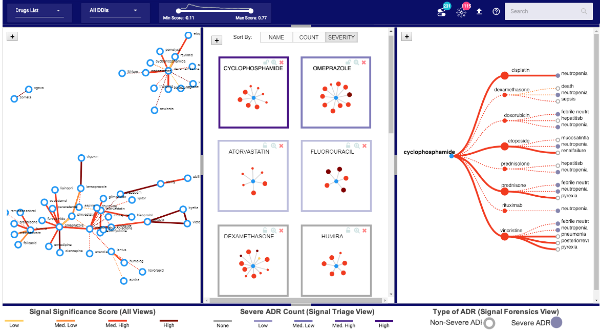
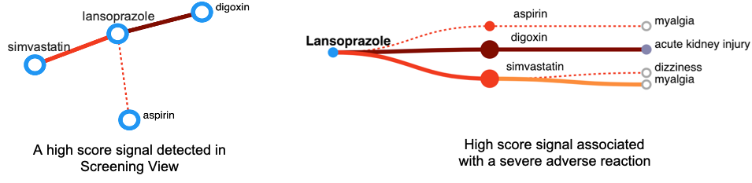

Backgound & Motivation
Adverse reactions caused by drug-drug interactions (DDI) are a major public health concern. Currently, adverse reaction signals are
detected through a tedious manual process in which drug safety analysts review a large number of reports collected through
post-marketing drug surveillance. On the other hand, applying machine learning techniques generate a large number of candidate signals disconnected
from the underlying reports that serve as context, and ultimately require human intervention to be validated
in the domain context as a true signal warranting action.
DIVA, a visual analytics approach, addresses these challenges by aligning with the drug safety analysis workflow to support the detection, screening, and verification of
candidate drug interaction signals by providing interactive visualizations.
Design Process and Challenges
Data. A machine generated DDI signal is a complex data model consisting of the interacting drugs, a set of adverse reactions and a numeric score to quantify the significance of the signal. To make this data useful for the drug safety analysis integration of domain knowledge such as the severity of the reactions, the status of the signals being known or unknown, and interactive linking to the underlying reports is crucial.
Tasks. Based on our user research, the system should support analysts in the screening and exploration of these machine generated signals, where they can interactively prioritize important signals, and analyze them to see if further investigation is needed.
Visual Design and Alternatives. Given the complexity of the DDI signal data and user tasks, designing a single visualization was not feasible. Therefore based on literature review and suitability of the visualization techniques for the underlying data, multiple visualizations were designed. To help analysts explore the set of all the machine-generated drug-drug interactions (DDIs) the possible candidates were adjacency matrix and node-link diagram. Due to sparsity in the matrix, a node-link diagram is used in the final design. To help analaysts prioritize drugs based on their signals, a node-link diagram based small-multiples layout is designed to show the DDIs associated with each drug. To support the analysis of DDIs in detail by displaying their associated adverse reactions, a tree diagram is designed following the same visual encodings.
In the node-link diagrams, the nodes represent drugs and the link represents the interaction between drugs. The visual encodings including color and size of links (Screening view) and nodes (Triage view) depict the significance score and status of the reactions, respectively.
DIVA's Interface
The interface of DIVA (shown below) consists of three multiple coordinated views to help with the drug safety tasks. The views aim to align with the work-flow of the analysts so that they can explore the major components of the AIM in an iterative manner. The Screening view (left) gives an overview of all machine-generated drug-drug interactions supporting an analyst in screening unknown and high scored signals. The Triage view (middle), composed of small multiples, shows all the drug interactions associated with a particular drug or set of drugs. It helps analysts prioritize a drug for review based on the aggregated interestingness of its interactions. The Forensics view (right) includes adverse reactions related to each drug-drug interaction for further exploration. To further investigate a drug interaction, at the lowest level, a reports view visualizes the line-listings and text narratives of reports associated with a selected drug interaction.
Please read the publication for more details on the design process and evaluation of DIVA.
Case Study
This case study conducted by a drug safety analyst at the FDA demonstrates the effectiveness of DIVA in vetting unknown DDI signals. During analysis, the analyst explores the signals related to the drugs assigned to her and observes Lansoprazole with a high scored (dark color) unknown interaction with Digoxin. The analyst investigates this DDI further in the Forensics view to analyze the associated adverse reaction, which in this case is a severe one. The analyst then views the reports associated with this signal to validate if it is a potential safety issue, and discovers that other drugs in the reports are the underlying reason for this severe adverse reaction.
This demonstrates how DIVA can help analysts interpret and interactively explore complex DDI signals generated by machine learning that are mere hypotheses about potential drug safety issues that need validation.
Project Contributions
In this project, I conducted user research, defined project goals, designed visual mockups, developed low- to high-fidelity prototypes and conducted case studies and interviews with domain experts.
Related publications
- Kakar, Tabassum, Xiao Qin, Elke A. Rundensteiner, Lane Harrison, Sanjay K. Sahoo, and Suranjan De. "DIVA: Exploration and Validation of Hypothesized Drug-Drug Interactions." In Computer Graphics Forum (EuroVis), vol. 38, no. 3, pp. 95-106. 2019.
- Kakar, Tabassum, Xiao Qin, Andrew Schade, Brian McCarthy, Huy Quoc Tran, Brian Zylich, Elke Rundensteiner, Lane Harrison, Sanjay K. Sahoo, and Suranjan De. "DEVES: interactive signal analytics for drug safety." In Proceedings of the 27th ACM International Conference on Information and Knowledge Management (CIKM), pp. 1891-1894. 2018.